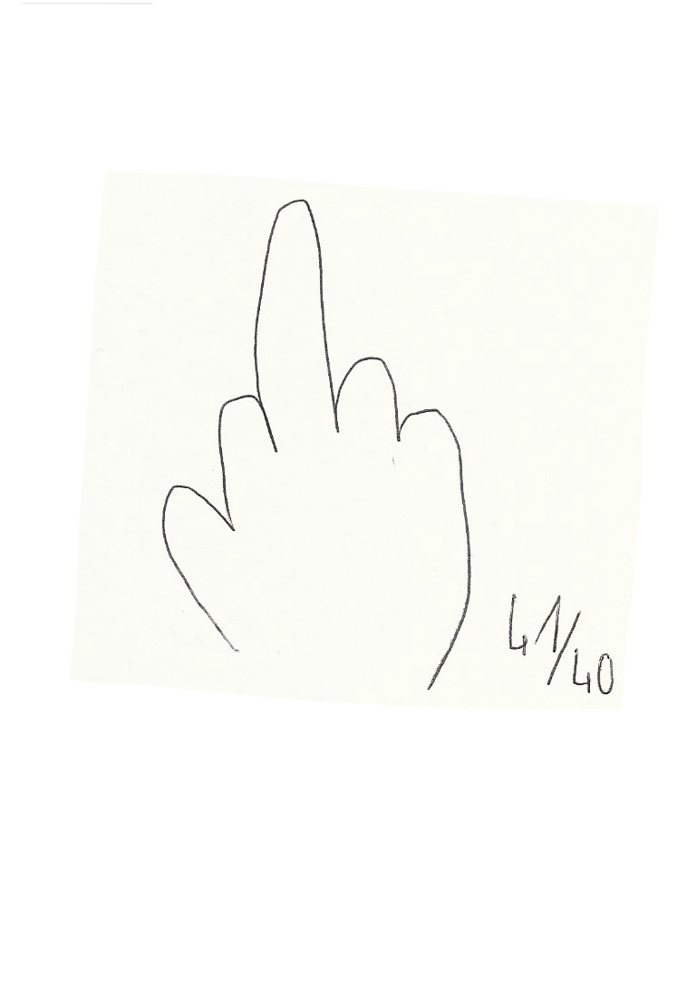
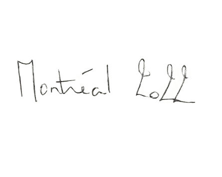

dont't know yet
dont't know yet

Le château
Hortense Raynaud
 À Fanny Courtecuisse et à sa famille.
(31:06) Je m’en fous, je m’en fiche. Maintenant j’enterre ça, je lève le tapis, je mets le tas de poussière là-dessous et je l’oublie, je passe à une autre pièce, comme si j’avais un château infini. Et que chaque phase de mon passé c’est une pièce où j’enfouis tout sous le tapis. Puis je passe à une autre pièce, et je retourne pas dans l’autre. Ça me sert à rien d’y aller puisque mon château est infini anyways. Tu vois ce que je veux dire. (31:34) Ça fait beaucoup de pièces. Ben ouais, il est infini. Il est infini. Qu’est ce que je m’en fous d’aller dans la pièce où j’étais hier ? M’en fous j’ai celle de demain. Ou d’aujourd’hui. Tu devrais être psy ou philosophe. Je sais pas, parce que j’ai vraiment pas grand chose à dire. Parce qu’entre la pizza et le château. Ça jesensqueçavaêtredansledocumentaire.Hahahahahahahahahaha! (31:15) J’ai compris que de me guérir, ce qui me guérissait, c’était d’oublier. Mais il faut pas oublier ? Pas t’oublies. Tu. Tu fermes la porte, ciao. Au lieu de res- sasser. Avant pourquoi j’étais malheureuse et pourquoi c’était fucked up dans ma tête et je me défonçais mais défonçais dans le sens pas pour faire la fête et rigoler, défonçais pour pas. C’était parce que j’étais pas bien. Je numb the pain comme on dit. Tu anesthésies la douleur. Et c’était pire. Je repensais tout le temps et je ressortais les dossiers du passé. Et si, et ça, et ça, et lui, et elle, et ça m’étouffait. Mais pourquoi tu fais ça meuf ? On s’en fout, passe à autre chose. Pourquoi tu repenses à du monde à qui tu parles plus ? C’était ta vie d’avant, c’est plus ça qui t’arrive. Ah oui ? Oh ? Bon, on avance.
(33:25) Le passé c’est le passé. Ça reviendra le jour où tu écriras mon bouquin. Wow ! À mon avis, là j’aurais oublié des bouts. Mais ça fait sa force. Le passé aussi. Ouais, mais ça y est ça m’a fait ma force, je sais qui je suis. Mais tu serais pas toi si tu n’avais pas ce passif là. Oui je suis d’accord, mais d’y repenser et de rester dans cette douleur et dans ce truc où ça bouffe la tête et les machins, c’est terminé. Donc maintenant ça y est, je me suis construite. Je sais qui je suis. Je changerai pas. Là, je sais qui je suis. Et ça va rester comme ça. Mais jusqu’à longtemps, je cherchais encore à trouver qui j’étais. Mais tu es qui ? Bah je suis Fanny Courtecuisse meuf. AKA Ketasexual. Ha ha ha ha ha ha ! Alors ça c’est une parenthèse sur un ventilo que j’ai acheté, le ventilo est un éventail. Voilà, il y a écrit dessus Ketasexual avec une licorne et un arbre qui montre son cul. (34:38) C’est quoi à gauche un écureuil ? Moi pour moi c’est un arbre qui montre son cul. Tu vois, je pense que j’étais trop défoncée pour remarquer ça. Mais non il a des yeux. C’est pas son cul, c’est des yeux. Mais regarde là, c’est des jambes, le pied, l’autre jambe. En fait il est comme ça. Mais il a des yeux dans le cul. Mais non c’est le cul tendu avec la licorne qui va avec. Non, c’est un crapaud qui mange le cul de l’arbre. Qu’est ce que tu racontes ? Bah oui, regarde, c’est pas une tête de crapaud qui mange un cul d’arbre en mode sexuel, genre en mode 69 sexuel. Non mais moi je crois que c’est ça. Moi je crois que c’est l’arbre qui attend de se faire vraiment défourailler par la licorne. Ah ouais, mais c’est quand même bizarre ses yeux dans son cul. En tout cas la licorne elle est sym- pa. C’est elle qui m’a fait acheter le truc. Ce n’est pas ce que j’ai vu d’abord. (35:47) Fanny Ketasexual c’est moi et j’ai pété au dictaphone. Tu pétais sur les shoo- ting de mode peut être ? Je crois pas. Ben non, parce que j’étais pas aussi bal- lonnée.